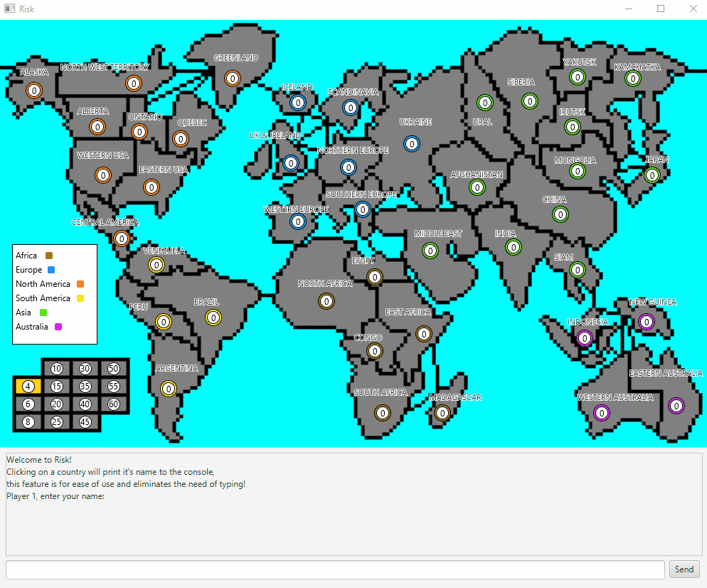
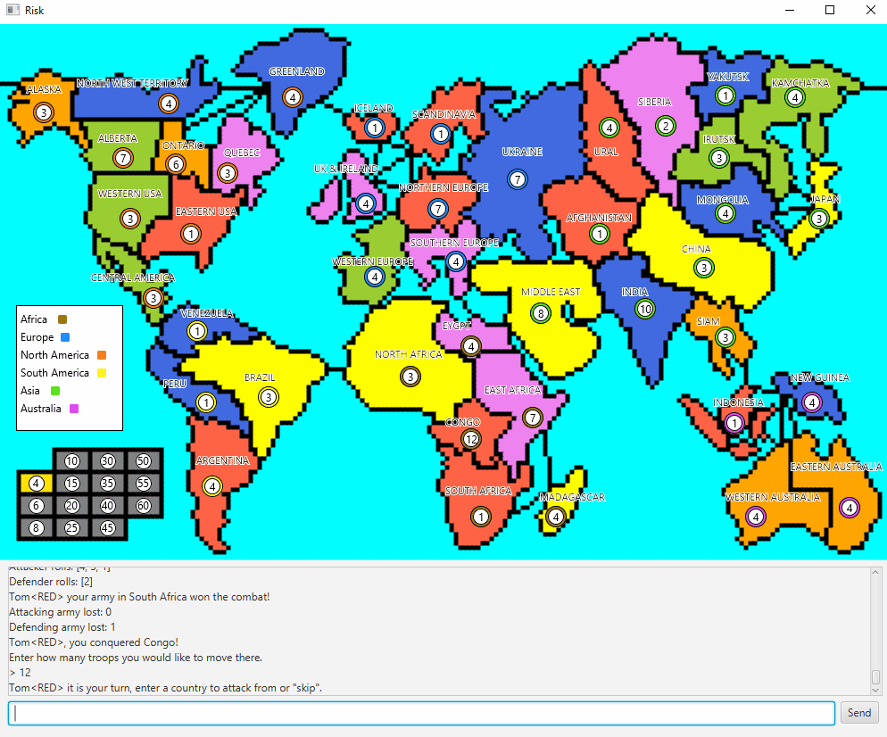
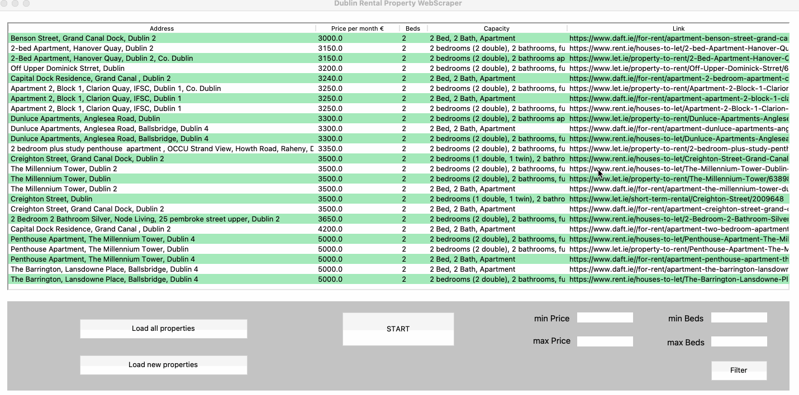

Tom Keenan
3rd Year Computer Science
3rd Year Computer Science
Risk board game built in Java utilising JavaFX.
Webscraper built in Python utilising BeautifulSoup, Selenium, Pandas and Tkinter.
Ethically sourced, high quality essential clothing.
I am an Irish 3rd year Computer Science student at University College Dublin. I am a creative and solution-oriented person with a passion for interdisciplinary work. I develop my technical skills through independent projects, which I often create as a solution to a problem that I have encountered in my day to day life.
2019 - 2023
First Year: 3.92 GPA (First Class Honours)
SecondYear: 3.69GPA (First Class Honours)
2018 - 2019
Aug 2021 - Present
Jun 2021 - Present
Languages: Java, Python, Scala, HTML, CSS, C, C++, SQL
Libraries: JavaFX, Tkinter, BeautifulSoup, Selenium, Pandas, NumPy
Version Control: Git
Methodologies: Agile, Design Thinking
Bouldering
Cooking
Sustainable Living
Risk Game created for the Software Engineering module in Second Year. We were tasked with implementing the Risk board game in Java. We decided to use JavaFX to give ourselves the most flexibility and allow ourselves to get creative. We received a perfect grade for this project.
This project demonstrates not only my proficiency in using an Object-Oriented programming language but my ability to work under strict deadlines, utilise SCRUM methodology and deal with conflicts within a team. This was a 3-person project but as it can be seen in the git repository, there was an uneven distribution of work. My teammate and I were to exceed expectations despite this setback.
The foundation of our game lies on the "pixel map" we created. We created a grid of 5x5 squares, giving us a screen of pixels which we had full control over. We then created the map on top, tracking which pixels were countries/borders or the ocean.
The countries are randomly divided among the players at the start of the game. A country owned by a player changes to their colour. The pixel map allowed us to have the pleasant animation of the grey countries filling with colour as the game begins.
There are two prominent features shown in this gif. The first is that clicking on a country will fill the text box with its name. Part of the assignment specification was string validation and as such it was required that the user type in country names. We thought this interrupted the flow of the game, it is still present but the player can also simply click the country to save time.
The second is the conquering animation. When a player takes over a country, a breadth first search is initiated from a central node, changing the colour and terminating when a border is reached.
Webscraper I built in Python to help in finding a house to rent. It scrapes data from the four largest property websites in Ireland - (daft.ie, let.ie, myhome.ie and rent.ie) and stores the data in a csv file. It then converts the csv to a dataframe to allow filtering and a cleaner method to display the data.
The program will begin scraping after clicking the start button. This will take approximately 7 minutes. Scraping from daft.ie takes the longest amount of time as it's website is partially loaded with javascript. I used Selenium to open a headless browser of Google Chrome and then got the data I needed from there using BeautfiulSoup. BeautifulSoup on it's own was enough for the rest of the websites.

The load properties button will load all properties found into the display on the GUI. Some properties have a price of 0, this is the default value for properties with no price.

The load new properties will load all new properties found since the last search. This allows for quick checking of recently added properties.

Filter functionality for the price per month and the number of beds. These two attributes were uniform across the four websites while also being the key elements that I was looking for in a rental home.
Double clicking the link will open it in your browser.
Aporia is a sustainable essentials clothing brand founded by myself, a computer science student, and
my co-founder, a fine art student. The dichotomy between our fields of study allowed us to think outside boundaries
that we might normally limit ourselves to.
Working on Aporia has developed far more skills than I every would have thought but below I would like to highlight a few of them.
I implemented the Agile methodology early on in the inception of Aporia. We used the SCRUM framework to guide our actions. By setting deadlines for sprints we were able to accurately assess what work each of us needed to complete to continue moving forward.
Working with someone from a completely different area of study has given me huge perspective on my problem-solving ability. Often times my co-founder's solution to a problem was a solution I had never considered, I found that to be an enlightening experience.
A business cannot operate without clear communication. Bolstered by the SCRUM framework, effective communication meant that we were always on the same page moving towards our goals. It is also a necessity when dealing with distributors and customers.
Rarely did things pan out as we planned them to. From delays in receiving our product to distributors not responding, many problems arose that were outside our expectations. Adaptability was a key factor in arriving at our deliverable product.
As mentioned in the about, Simplicity informs everything at Aporia. The products we sell at the moment are simply high quality organic shirts. I designed the site so that in just a few clicks the customer can purchase a shirt without being overloaded with information. Our packaging is as minimal as it can possibly be, it is 100% biodegradable so it generates absolutely no waste. I am proud that we managed to weave the simplicity we strive for into every facet of the business.